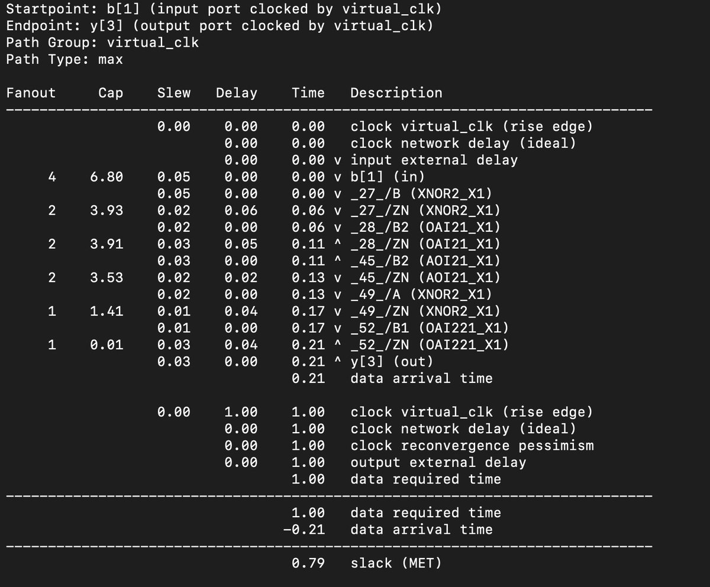
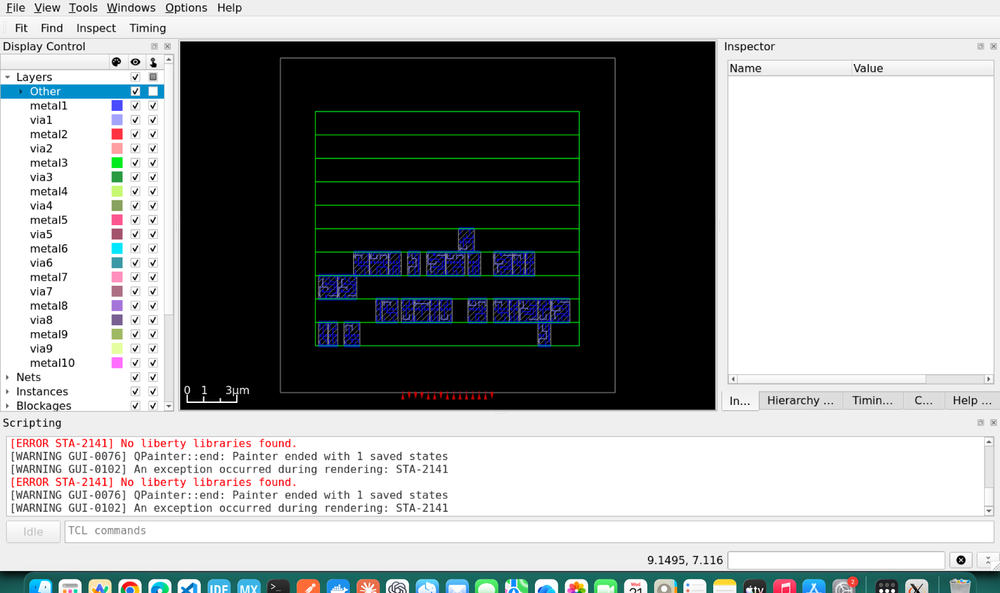
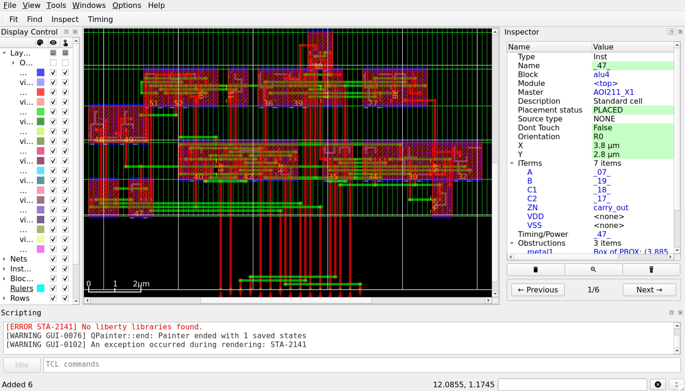

🧮 4-bit ALU: RTL to Layout
I am learning digital design with an ASIC-first approach. Instead of reading about the chip design flow, I wanted to take one small circuit through all of it myself: writing the RTL, verifying it, synthesizing it into real standard cells, checking its timing, and then placing and routing it into a physical layout. A 4-bit ALU felt like the right size for this. It is small enough that I can understand every gate, but it still has an adder, so there is a real critical path to look at.
Obviously I am not alone in this. I used ChatGPT to take me through this entire workflow. All the tools I used are open source. Yosys for synthesis, OpenROAD for timing and physical design, and the Nangate45 library as the standard cell library.
What the ALU does
The ALU takes two 4-bit inputs, a and b, and a
2-bit op that selects the operation. It produces a 4-bit
result y and a carry_out.
-
op = 00: addition.yis the lower 4 bits ofa + b, andcarry_outis the 5th bit. op = 01: bitwise ANDop = 10: bitwise ORop = 11: bitwise XOR
For the logic operations, carry_out is always 0.
Writing the RTL
I wrote the ALU in Verilog as a single always @(*) block
with a case statement on op. Every output has
to be assigned on every path. If I forget to assign y in
some branch, the synthesis tool assumes the old value should be held,
and it infers a latch. That is not what a combinational circuit should
have. So I gave all outputs a default value at the top of the block.
Later, Yosys confirmed there were no latches or flip-flops in the
design.
Testing it
Since the inputs are only 10 bits (2, 4 bit numbers and 2 bit input)
wide in total, I could test every single combination. The testbench
loops over all values of a, b and
op, which gives 1,024 cases. For each case, a task computes
the expected result, and another task compares it with the ALU output
using !==. On any mismatch, the simulation stops with
$fatal.
All 1,024 cases passed. But a passing testbench only means something if
it can actually fail. So I broke the RTL on purpose and changed XOR into
OR. The testbench caught it at a = 0001, b = 0001, op = 11,
after about 71 passing cases. Then I restored the correct RTL.
Synthesis
Before mapping to a standard cell library, Yosys showed 11 high-level
cells (things like $add, $and,
$pmux). A generic gate-level synthesis turned that into 41
simple gates.
Then I mapped it to the actual Nangate45 standard cells:
LIB=/OpenROAD-flow-scripts/flow/platforms/nangate45/lib/NangateOpenCellLibrary_typical.lib
yosys -p "
read_verilog alu4.v
hierarchy -check -top alu4
synth -top alu4 -noabc
dfflibmap -liberty $LIB
abc -liberty $LIB
clean
stat -liberty $LIB
write_verilog -noattr alu4_mapped.v
"
The result was 29 standard cells with a total cell area of 35.378 µm². The cells were mostly compound gates like AOI and OAI, plus five XNORs. The mapped netlist does not look like "an adder, three logic blocks and a mux", because ABC restructures the logic to fit the library cells. Also, 35.378 µm² is just the sum of the cell footprints. It is not the area of the chip.
Timing before layout
The ALU has no clock, so there is nothing to time against by default. To run static timing analysis, I created a virtual clock with a 1 ns period. Inputs are launched and outputs are captured with respect to this clock. I also set a 50 ps input slew and a 0.01 pF load on the outputs.
The worst path was from b[1] to y[3], through
five gates:
XNOR2 → OAI21 → AOI21 → XNOR2 → OAI221
-

image.png
It took about 0.21 ns, which leaves +0.79 ns of slack. The other outputs
were faster: y[2] at 0.18 ns, carry_out at
0.16 ns, y[1] at 0.14 ns and y[0] at 0.12 ns.
This makes sense. The higher result bits depend on the carry coming up
from the lower bits.
One thing I want to be careful about: this does not tell me the maximum frequency of a chip. The 1 ns clock is something I made up as a reference. This is just a way to measure how long the combinational path takes.
Floorplan
Now the physical part. A floorplan defines the die (the whole chip area) and the core (the area where cells are placed). I asked for a 20×20 µm die with the core from (2, 2) to (18, 18) µm. OpenROAD snapped the core to the placement grid, so it actually became (2.09, 2.8) to (17.86, 16.8) µm, which is 220.78 µm².
The core is divided into rows of placement sites. Here there are 10
rows, each with 83 sites, and each site is 0.19 × 1.4 µm. Every
alternate row is flipped vertically (marked FS) so that
neighbouring rows can share their power rails.
-
 The green asymmetric shape demonstrates the actual vertical flip.
The rail positions swap as a consequence of that reflection.
The green asymmetric shape demonstrates the actual vertical flip.
The rail positions swap as a consequence of that reflection.
With 35.378 µm² of cells in 220.78 µm² of core, the utilization is about 16%. That is low, but this is a tiny design anyways.
Placement
Placement happens in two steps. Global placement spreads the cells out to minimise wire length while keeping density under control. It ran for 369 iterations and ended with an estimated wire length of about 221.6 µm. Global placement allows cells to overlap, so detailed placement then snaps every cell onto a legal site. It fixed 8 overlaps across 4 cells, and the wire length went up to 249.9 µm.
The input and output pins were also placed on the edges of the die, all 15 of them.
When I looked at the layout in the GUI, the five gates of the critical path were not sitting next to each other. The placer optimises all the nets together, not just the critical path, and I did not turn on timing-driven placement.
-

After cell placement
Routing
Routing also happens in two steps. Global routing does not draw any wires. It divides the chip into a grid and decides which regions and metal layers each net should pass through. These are saved as route guides. Detailed routing then draws the real wires and vias inside those guides. It finished with 0 violations. The total wire length was 287 µm, 153 µm on metal2 and 134 µm on metal3, with 230 vias.
At this stage there was no power grid yet. Also, 0 violations from the router is not the same as a full DRC and LVS signoff (more on this later).
-

After detailed routing
Timing after routing
After routing, the wires have real resistance and capacitance. I extracted these parasitics (37 nets, 180 resistor segments, 300 coupling capacitors), wrote them to a SPEF file and ran timing analysis again with the same constraints as before.
With the parasitics actually loaded, the same path went from 211.24 ps to 224.75 ps. That is 13.51 ps, or about 6.4% slower.
The interesting part is where this extra delay shows up. The delay of the wires themselves is tiny here, around 0.24 ps on a net, because the wires are only a few microns long. Most of the increase is inside the gates. Each gate now has to charge its wire capacitance in addition to the input pins it drives, so it takes longer to switch. So in this design the wires slow things down mostly by loading the gates, not by their own RC delay.
Adding a power grid
Up to this point the cells had VDD and VSS pins, but nothing physically connected them to a supply. So I built a power grid in OpenROAD. It has thin horizontal rails on metal1 that run along every row (this is why alternate rows are flipped, so that neighbouring rows share a rail), vertical straps on metal4, and wider straps on metal7, with vias connecting the layers. So the grid is connected internally, but I have not defined where power comes in (terminals).
The power straps take up space on the metal layers, so I had to route the signals again. This time the detailed router needed a few iterations. The signal wiring grew slightly, from 287 µm to 289 µm, and from 230 to 236 vias.
The critical path went from 224.75 ps to 226.11 ps, which is 1.36 ps
(about 0.6%) slower, with +773.89 ps of slack. The second worst path,
b[1] to y[2], actually got slightly faster,
from 187.41 ps to 186.92 ps. The wires simply took slightly different
paths around the power grid.
From layout to GDS
The OpenROAD database refers to each standard cell only by its name and
outline. The actual transistor-level shapes of the cells live in the
Nangate45 library GDS. GDSII is the format that contains every polygon
on every layer, which is what a fab would eventually work with. I used
the KLayout technology file generated by OpenROAD-flow-scripts and
KLayout's def2stream.py to merge my routed DEF with the
library cells into alu4.gds.
Checking the layout
This is where the "0 violations" from the router got tested. I ran the FreePDK45 DRC deck in KLayout on the full layout, and it found 4 violations of a rule called WELL.4.
To understand this I had to go one level down. PMOS transistors sit
inside an N-well, and NMOS transistors sit in a P-type region. WELL.4
says that a well has to be at least 0.20 µm wide. The four findings were
around 0.15 µm wide. One was on the top cell alu4, two were
inside OR2_X1 cells and one inside an
AOI211_X1. One thing to be careful about: this rule is
about the width of a well, not about the spacing between an N-well and a
P-well.
Where I stopped
At this point I decided to close the project. The ALU is verified, synthesized, placed, routed with a power grid, timed with real parasitics, and exported to GDS. But it is not a chip that can be manufactured. There are 4 open DRC violations, no LVS, no power terminals, no IR drop or electromigration checks, and all the timing is on a single typical corner with input and output constraints that I made up. Nangate45 is also an educational library, not a real foundry PDK.
I could keep debugging the WELL.4 violations, but that is a physical verification problem. The objective of this exercise was achieved which was to get a good high-level overview of the ASIC Design flow.
What's next
Next, I am moving on to sequential logic, where clocks, flip-flops, setup and hold time come into the picture. I will start with a D flip-flop and a register, with a testbench that checks the output cycle by cycle, and then build a counter and a small state machine. I will come back to the DRC violations and LVS when I get to physical verification properly in the near future.